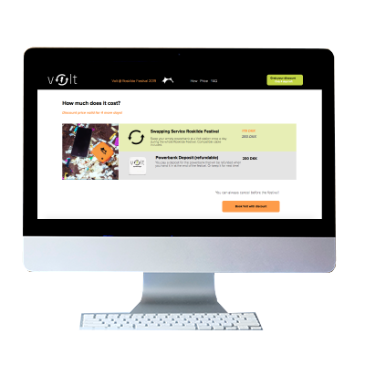

Project for Volt
For this project we collaborated with an external client. Volt is a young company that wants to optimise cultural experiences. They provide festival goers with power banks at Roskilde Festival. Almost 15.000 sign up for their service online through the Volt website. Our given task was to improve their Roskilde landing page and the following purchase flow. (How can Volt better explain its services to new customers, simplify the customer journey from the landing page and reduce the bouncing rate?)
Process
We were a group of two and did the design sprint to develop a solution for the problem. You can have a look at our full documentation here.
Day 1 - Map:
We mapped out the problem by analysing Volt’s current solution and
their Google Analytics data. We created a user journey and long term
goals. We also defined the target group and created a persona based
on our target group definition. We made an Eco model to use the
insights for the following steps.
Day 2 - Sketch:
We sketched ideas and tried to use our insights to adapt and improve
the UX while doing so.
Day 3 - Decide:
We decided upon a final sketch. We then created a moodboard and a
storyboard for the video we wanted to include to draw the target
group's attention to the product.
Day 4 - Prototype:
We created a
XD protoype
for the landing page and a coded version for the purchase flow. At
this point we also made the icons and picked images we want to use.
These are the icons inspired by the Roskilde Festival logo:
Day 5 - Test:
On day 5 we tested our solution. We did the BERT test to see if the
webpage translates the feeling we intended to create. We had 11
participants and the result were positive overall. For the purchase
flow we did a Think Aloud test to see, if the users think there are
any misconceptions or why certain parts are easy to use.
Day 6 - Code:
We splitted up for coding. We coded section by section with the
prototype in mind.
Solution
I worked on the video mockup, design and on coding the landing page. We used the images, font and logos provided by Volt. We used Adobe XD for the prototype. The icons were made in Illustrator. The video mockup was made in After Effects. We used HTML, CSS and Javascript to create the landing page and purchase flow, you can find the Github repository here and the working solution here.
Thoughts
My group partner worked on the business parts of the project (for instance the ECO model and Google Analytics data). She explained all her results to me and I was able to learn a lot from her. It was also great to apply all the things we learned in different areas in one project and see how far we can come within only a few days.